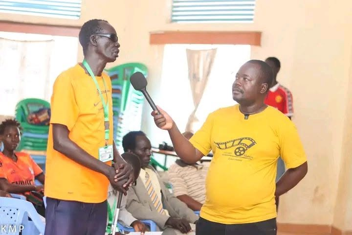
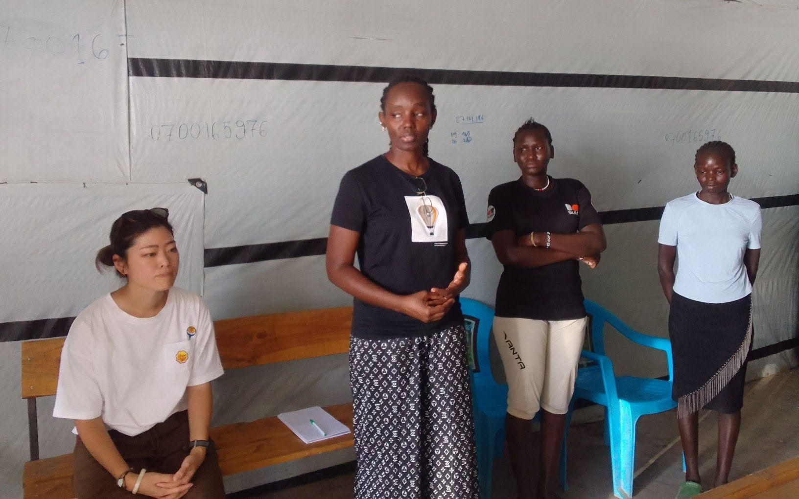
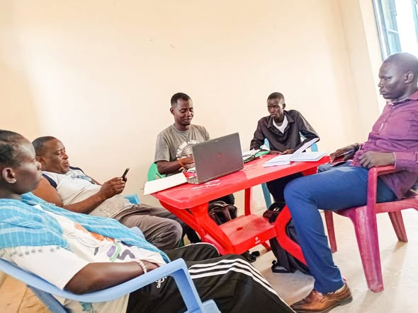

01
Arts and Talent Development
UCN helps young people identify, practice, and showcase their talents, creating positive pathways for expression, confidence, and leadership.

Our Programs
UCN delivers targeted programs in arts, GBV prevention, and counseling — empowering youth and women across Kakuma and Kalobeyei.
What We Do
UCN helps young people identify, practice, and showcase their talents, creating positive pathways for expression, confidence, and leadership.

Training sessions strengthen awareness, prevention, and response knowledge so women, youth, and families can better recognize and address gender-based violence.

UCN provides counseling-centered support and referrals through trusted community relationships, helping people find care close to home.
Where We Work
Union Community Network creates pathways for youth and women through life skills, counseling, vocational growth, digital opportunities, and community-centered partnerships.